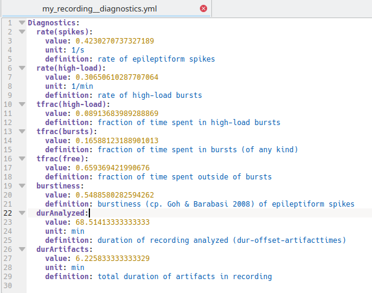

Accessing metadata and diagnostics metrics¶
You can render metadata and diagnostics metrics automatically in human readable form using odML or yaml. A single metadata and/or diagnostics file is created for a specific recording.
Metadata includes the parameters used for analyses and details about who analyzed the data when and the paths to the figures created during the different analysis steps. Therefore metadata is sub-section into the fields:
EdDetection, for spectral and amplitude based spike detection
SpikeSorting, for sorting of spikes to remove false positives
BurstClassification, for burst detection and classification
Diagnostics metrics include metrics we commonly use to address the severity of epilepsy. These include:
rate(spikes), the rate of spikes detected during the recording (/s)
rate(high-load), the rate of high-load bursts (/min)
tfrac(high-load), the fraction of time spent in high-load bursts
tfrac(bursts), the fraction of time spent in bursts of any kind
tfrac(free), the fraction of time spent outside of bursts
burstiness, (std(ISI)-mean(ISI))/(std(ISI)+mean(ISI)); ISI being interspike interval, see Goh and Barabási (2008)
General¶
Before you start, make sure that you are in the virtual environment for PEACOC if you have set up one:
> workon peacoc
… and make sure you are in the folder of PEACOC. My command-line would look like this:
(peacoc) weltgeischt@heulsuse:~/PEACOC_tutorial/PEACOC
The general command structure for rendering metadata and diagnostics in both formats looks like this:
> python runthrough/metadata_diagnostics.py --format=<format> -<options> <path/to/paramfile.yml>
<format> can be either yaml or odml, depending on your taste of filetype
<options> can be:
d for rendering diagnostic metrics
m for rendering metadata metrics
md for rendering metadata and disagnostic metrics in a single file
odML¶
If you want to know more about odML, have a look at this. To be able to render something in odML format, you need to have odml installed. You can do so using pip:
> pip3 install odml
Example 1¶
Now, lets render diagnostic metrics of our example recording in odML format:
> python runthrough/metadata_diagnostics.py --format=odml -d /home/weltgeischt/PEACOC_tutorial/run_params/my_recording_params.yml
This generates a file my_recording__diagnostics.xml at the folder we had assigned to store the data, in my case /home/weltgeischt/PEACOC_tutorial/my_results/data/my_recording:
{kind=link}
Open the file in your browser (e.g. right click on the file and select Open With > Firefox). It should look like this:
{kind=link}
If you now click at the blue Diagnostics tab, it will bring you to all the beautiful diagnostic metrics:
{kind=link}
Example 2¶
Now let’s render metadata in odML format. You type the same as in the previous example, only that you now use option -m instead of -d:
> python runthrough/metadata_diagnostics.py --format=odml -m /home/weltgeischt/PEACOC_tutorial/run_params/my_recording_params.yml
This generates a file my_recording__metadata.xml in the results folder. Open it in your browser. As you see it displays a section for each analysis step, with subsection called …_methods and …_info. In the former you find the parameters used for running the analyses, in the latter you have links to figures generated and who ran the procedure when. Clicking on the respective subsection will directly bring you to its content.
{kind=link}
Example 3¶
To produce a single file that contains both metadata and diagnostic metrics in odML format, use option -md:
> python runthrough/metadata_diagnostics.py --format=odml -md /home/weltgeischt/PEACOC_tutorial/run_params/my_recording_params.yml
The file generated is called my_recording__metadata_diagnostics.xml and also resides in the main results folder. As you see, now the file incorporates both, the diagnostic metrics from Example 1, and the metadata from Example 2:
{kind=link}
YAML¶
For the output format yaml it works exactly the same as described for odML in the previous section, i.e. you can use option -d, -m or -md. For example, to get the diagnostic metrics you type:
> python runthrough/metadata_diagnostics.py --format=yaml -d /home/weltgeischt/PEACOC_tutorial/run_params/my_recording_params.yml
This generates a file my_recording__diagnostics.yml in the results folder. Just open this file with some basic text editor (by clicking on it):
{kind=link}
If you are not in the mood of accessing the results through matlab or python, you can conveniently read some essential diagnostic metrics from this file.